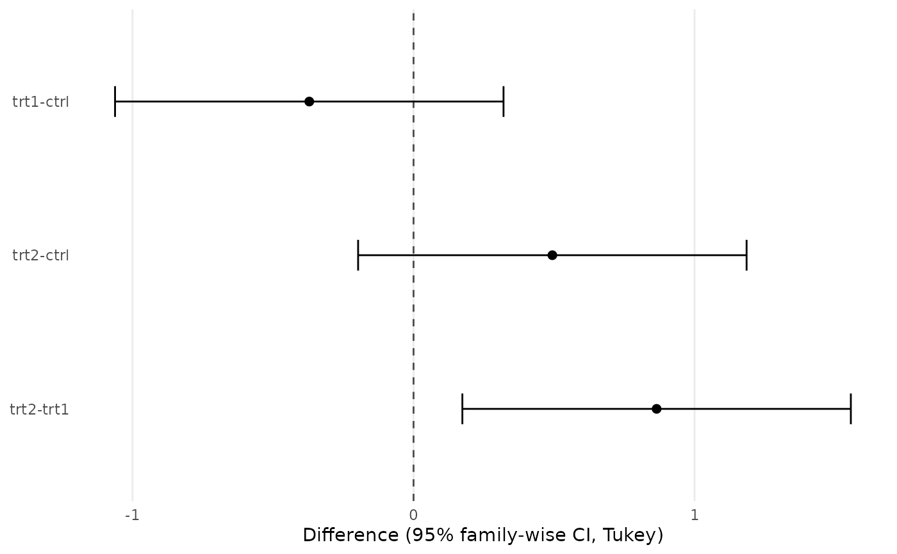
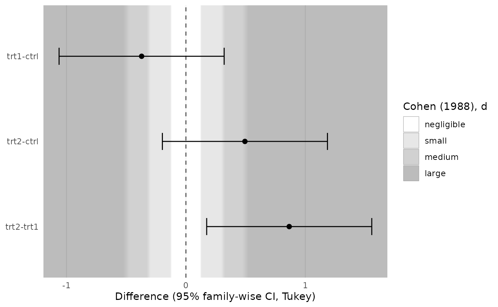
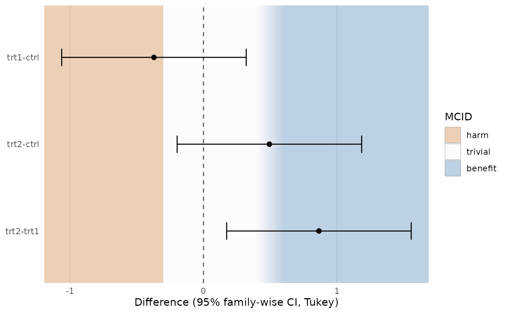

Draws contrasts (rows) against their estimated difference (x axis) as
points with confidence-interval bars and a reference line at the null.
A zones layer from geom_es_zones() or geom_mcid_zones(), if given, is
drawn first, behind everything else.
Usage
plot_contrasts(x, zones = NULL, ...)
# S3 method for class 'data.frame'
plot_contrasts(
x,
zones = NULL,
...,
model = NULL,
null = 0,
xlab = "Difference"
)
# S3 method for class 'TukeyHSD'
plot_contrasts(x, zones = NULL, ..., which = NULL, model = NULL, xlab = NULL)
# S3 method for class 'emmGrid'
plot_contrasts(x, zones = NULL, ..., model = NULL, xlab = NULL)Arguments
- x
A
TukeyHSDobject, anemmGridof contrasts (e.g. fromemmeans::contrast()orpairs()), or a data frame with columnsterm,estimate,lower,upper.- zones
A zones layer from
geom_es_zones()orgeom_mcid_zones(), orNULL.- ...
Passed to methods. For
emmGrid, passed toconfint()(e.g.level,adjust).- model
A fitted model used to fill a missing
sdinzones(TukeyHSDobjects and data frames do not carry their model).- null
Position of the null (reference line). Defaults to 0, or 1 for ratios from emmeans.
- xlab
Axis title for the difference axis.
- which
For
TukeyHSD: the term(s) to plot. Default all; several terms are shown in separate panels.
Details
If the zones need an SD (standardised "d" thresholds drawn over raw
differences) and none was given, it is taken from the model:
pooled_sd() of model, or of x itself for emmGrid objects. A
message says so. Without a model, an error asks for sd.
Examples
fit <- aov(weight ~ group, data = PlantGrowth)
plot_contrasts(TukeyHSD(fit))

plot_contrasts(TukeyHSD(fit),
zones = geom_es_zones(es_benchmarks("cohen_d")),
model = fit)
#> ℹ Converting d thresholds with the model's pooled (residual) SD = 0.623.
#> Set `sd` in the zones layer to use a different SD.

plot_contrasts(TukeyHSD(fit),
zones = geom_mcid_zones(mcid_thresholds(lower = -0.3,
upper = c(0.4, 0.6))))
